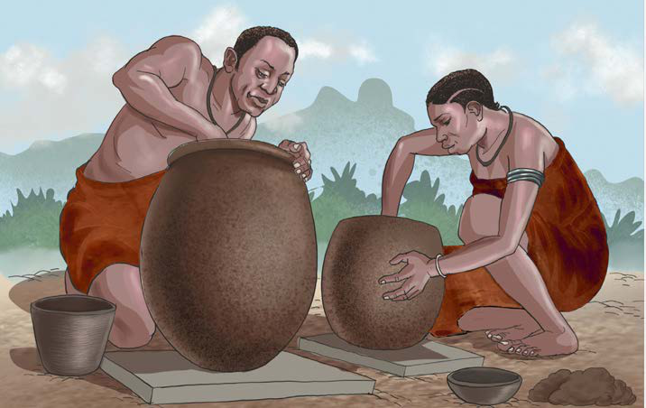

Zoezi namba 3
- Swali la kwanza. Eleza tofauti ya sayansi na teknolojia za asili na za sasa katika shughuli za uvuvi.
- Swali la pili. Bainisha faida za sayansi na teknolojia asilia katika uvuvi.
Sayansi na teknolojia asilia ya ufinyanzi
Sayansi na teknolojia ya ufinyanzi ilifanyika kwa kutumia udongo wa mfinyanzi. Jamii zilikuwa na maarifa na ujuzi wa kutambua udongo unaofaa na usiofaa kwa ajili ya shughuli za ufinyanzi. Sayansi na teknolojia ya ufinyanzi ilifanyika kwa kutumia udongo wenye asili ya mfinyanzi. Udongo huo ulichanganywa na maji, kisha kuufinyanga kwa kuufinyafinya kwa lengo la kuunda chombo chenye umbo fulani. Mfano wa vyombo vilivyofinyangwa ni: mitungi, vyungu, bakuli na kadhalika. Kielelezo namba 14, kinawasilisha sayansi na teknolojia ya ufinyanzi.
